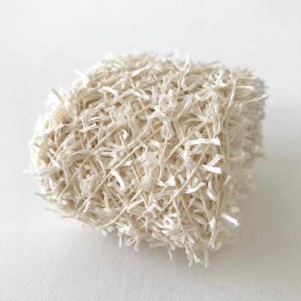
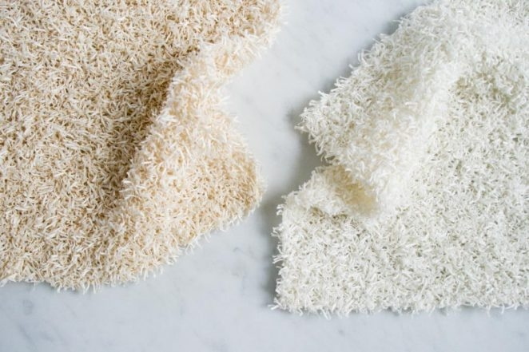

The greatest gift this pandemic has given me is the luxury of time. Namely, the time to reflect on what's truly important. Like many of us, my spending habits have changed. As I watched malls lay barren and legacy chains shutter one-by-one, more questions came to mind: Was this all meant to be? How many pairs of shoes do I really need if I no longer went out? Is not fashion merely social pageantry? There was no turning back as I stepped into my new frugality. If our civilization has survived over 6,000 years on limited resources in the absence of a mass-market economy, I could do with less.
 I began by looking for disposable items that could be replaced by reusable ones I could make by hand, like these hand-knitted washcloths & scrubbing mitt designed by Purl Soho. I discovered this delightful cotton cork chenille yarn at Habu Textiles, a Portland-based shop carrying the most exquisite selection of fibers & textiles from Japan. Takako Ueki, Habu's founder takes frequent trips to the country on her time off, constantly on the lookout for unique, small-batch suppliers. Takako's chenille yarn is 100% cotton, with little "legs" that stick out, maximizing surface absorbency. As I spend hours obsessing over my new project, I am reminded by search engine algorithms that a 6-pack of organic cotton washcloths costs $10.39 on Amazon. Undeterred, I am also reminded that by participating in the fabrication of the most basic household items, we begin to open our eyes to the true value of human labor, craftsmanship, and to the harsh realities of our consumer-based economy.

Photo: Purl NYC LLC, all right reserved.